Atividades Gamificadas
Aprendizagem ativa por meio de dinâmicas interativas e visuais
Metodologia de Gamificação
As atividades gamificadas foram desenvolvidas para aumentar o engajamento, tornar conceitos complexos mais acessíveis e criar um ambiente de aprendizagem seguro. Utilizamos dinâmicas de Verdadeiro/Falso, múltipla escolha e associação com imagens em estilo VideoScribe para facilitar o entendimento mesmo para participantes com limitações de leitura.
🎯
Compreensão de conceitos através de situações reais
📊
Consolidação de habilidades com feedback imediato
🔄
Repetição leve e progressiva do conteúdo
Gamificação - Educação Financeira
6 questões interativas para reforçar o aprendizado em finanças
1
O que fazer quando tenho dívidas?
A) Ignorar as dívidas enquanto elas crescem
B) Procurar negociar o mais rápido para pararem de crescer
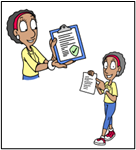
2
Por que o cartão pode ser uma armadilha?
A) Se não pagar na data limite, a conta aumenta a cada mês
B) Se não tiver dinheiro para pagar, a conta não aumenta
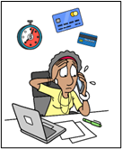
3
Cuidados com o cartão
A) Compartilhar senhas com amigos
B) Deixar parentes usarem
C) Não gastar mais do que conseguirá pagar
D) Compartilhar senhas com colegas

4
Importância do INSS
A) É apenas mais um imposto
B) Segurança em casos de acidente, aposentadoria e doença
C) Ganhar prêmios do Governo
D) Comprar com desconto
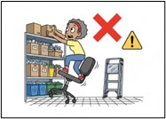
5
Associação de conceitos
A) Reciclagem
B) Limpeza
C) Pesagem
D) Aprendizagem
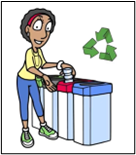
6
Dinheiro guardado
A) Dívida
B) Compra
C) Gasto
D) Poupança
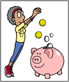
7
O que fazer se receber uma mensagem pedindo PIX urgente em nome de um familiar?
A) Transferir rápido para ajudar
B) Ligar para o familiar para confirmar antes de qualquer coisa
C) Ignorar e não fazer nada
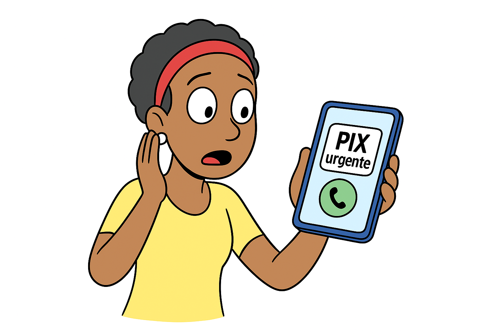
8
Uma empresa oferece empréstimo fácil, mas pede uma taxa adiantada. O que fazer?
A) Pagar a taxa, pois é um bom negócio
B) Recusar, pois empréstimo verdadeiro não cobra taxa antecipada
C) Pedir mais informações por WhatsApp
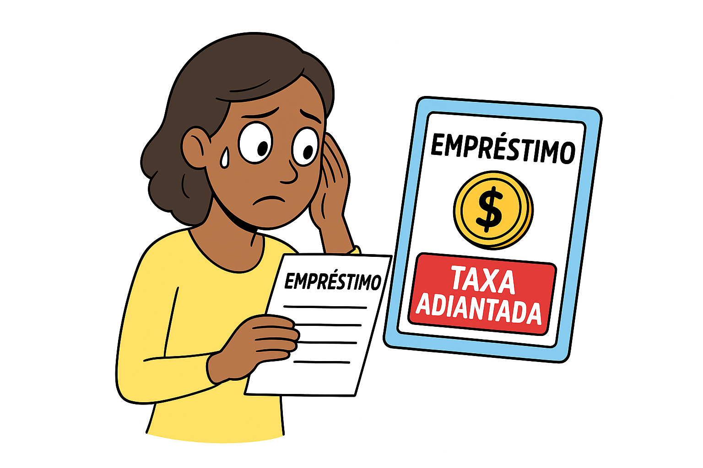
Gamificação - Saúde e Segurança no Trabalho
12 questões interativas para reforçar o aprendizado em SST
1
O que é segurança no trabalho?
A) Apenas usar capacete e luva
B) Um jeito de pensar para evitar se machucar e ajudar colegas
C) Trabalhar mais rápido sem parar
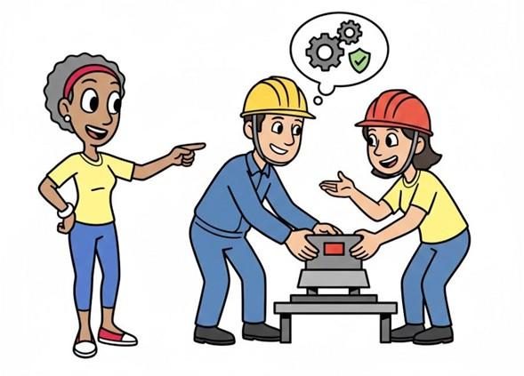
2
Qual atitude mostra cuidado coletivo?
A) Ver um prego no chão e deixar lá mesmo
B) Avisar um colega que a bota dele está desamarrada
C) Guardar só o seu próprio material
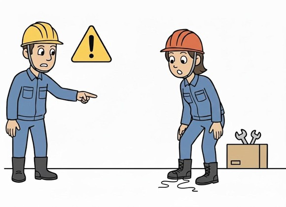
3
Identificando riscos
A) Segurança
B) Risco
C) Descanso
D) Organização

4
Qual é o jeito correto de levantar peso?
A) Curvando as costas
B) Dobrando o joelho e usando a força da perna
C) Puxando rápido para acabar logo
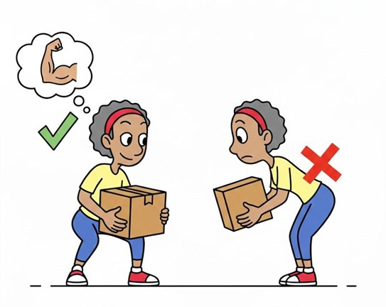
5
Qual é a forma mais segura de lidar com vidros?
A) Misturar tudo no mesmo saco
B) Mexer com luva grossa e separar só para vidro
C) Segurar o vidro com as mãos nuas
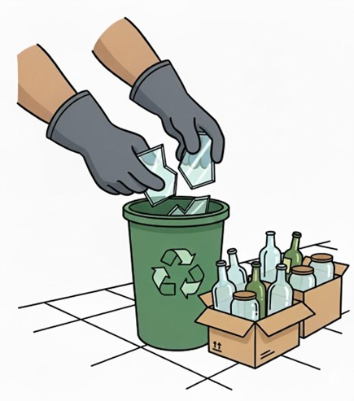
6
Organização
A) Bagunça
B) Organização
C) Perigo
D) Lazer
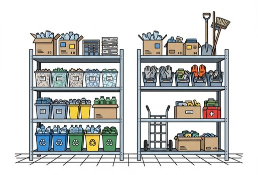
7
Por que alongar antes do trabalho é importante?
A) Para cansar mais rápido
B) Para evitar dor e preparar o corpo
C) Para gastar tempo
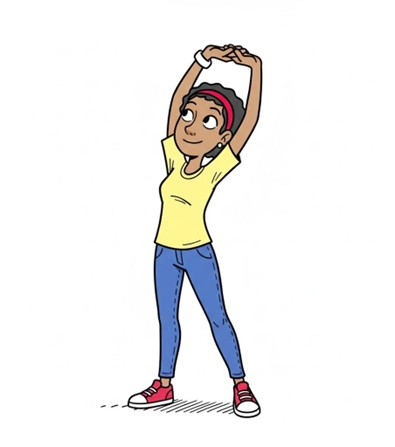
8
O que devo fazer para evitar cansaço excessivo?
A) Trabalhar sem parar
B) Não beber água
C) Fazer pequenas pausas e respirar fundo
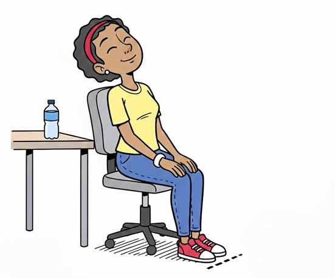
9
Autocuidado
A) Descuido
B) Autocuidado
C) Desorganização
D) Improviso
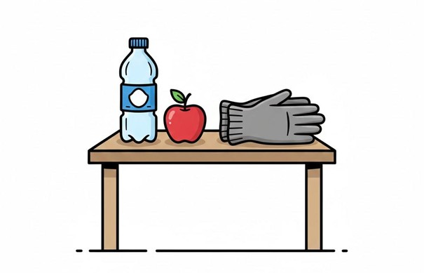
10
O que significa fazer da segurança um hábito diário?
A) Só usar EPI quando lembrar
B) Repetir ações seguras todos os dias
C) Fazer segurança só quando o chefe estiver olhando
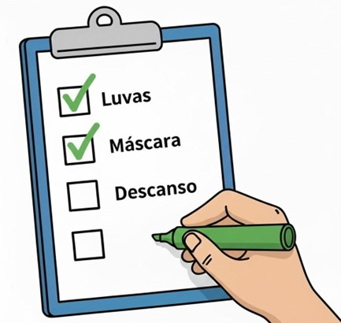
11
Por que improvisar é perigoso?
A) Porque sempre dá certo
B) Porque resolve rápido e melhora a segurança
C) Porque pode causar acidente mesmo parecendo mais rápido
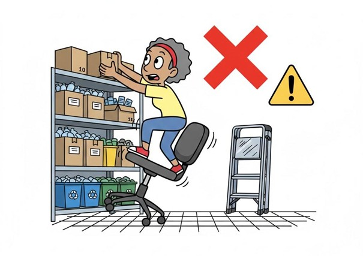
12
Futuro e dignidade
A) Risco
B) Futuro
C) Bagunça
D) Acidente
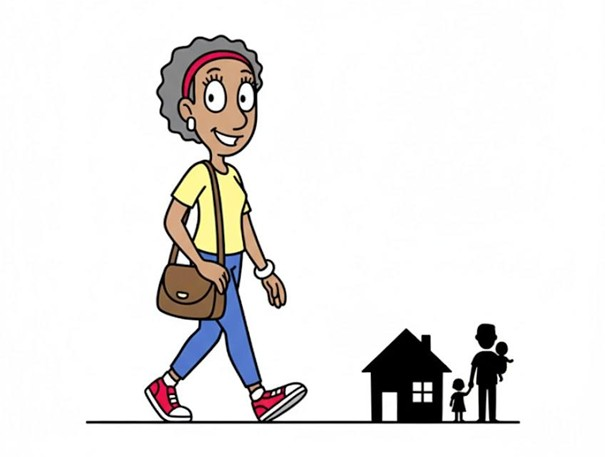